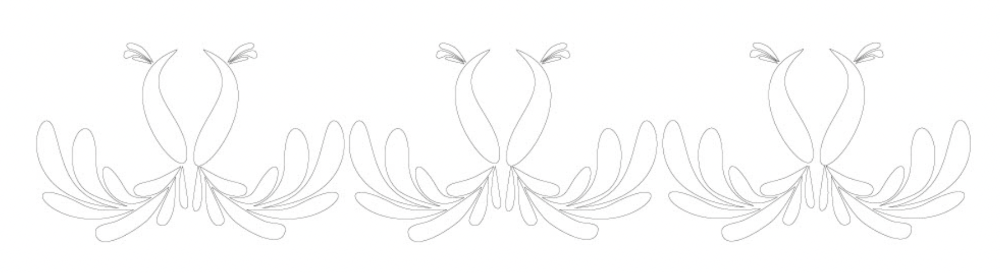

Sonia Goveas
pattern simplfied
This project began with a question: how can the elaborate, handcrafted borders found on traditional Indian clothing be reimagined through a minimalist lens, without losing their elegance or cultural essence?
I studied a variety of regional textile patterns: zari embroidery, block-printed saris, and handwoven motifs, paying close attention to repetition, symmetry, and edge detail. Using Adobe Illustrator, I translated these intricate forms into simplified geometric patterns, focusing on rhythm and negative space to preserve the spirit of the original designs. The result is a modern reinterpretation that pays homage to traditional craft while stripping it down to its most essential elements. It is a precise balance between ornament and restraint, history and clarity, a celebration of Indian textile heritage in a contemporary voice.
